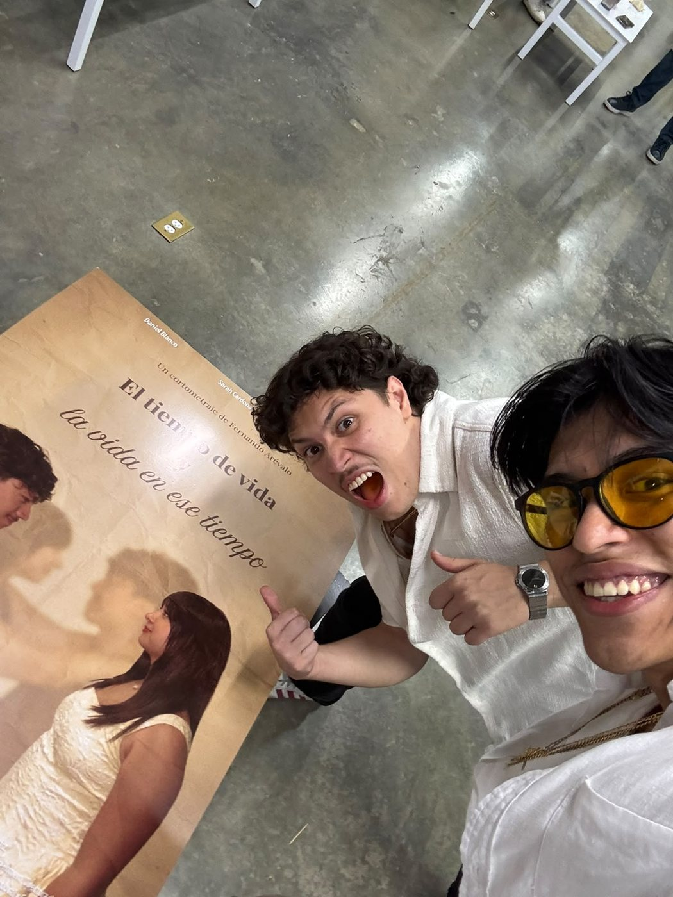
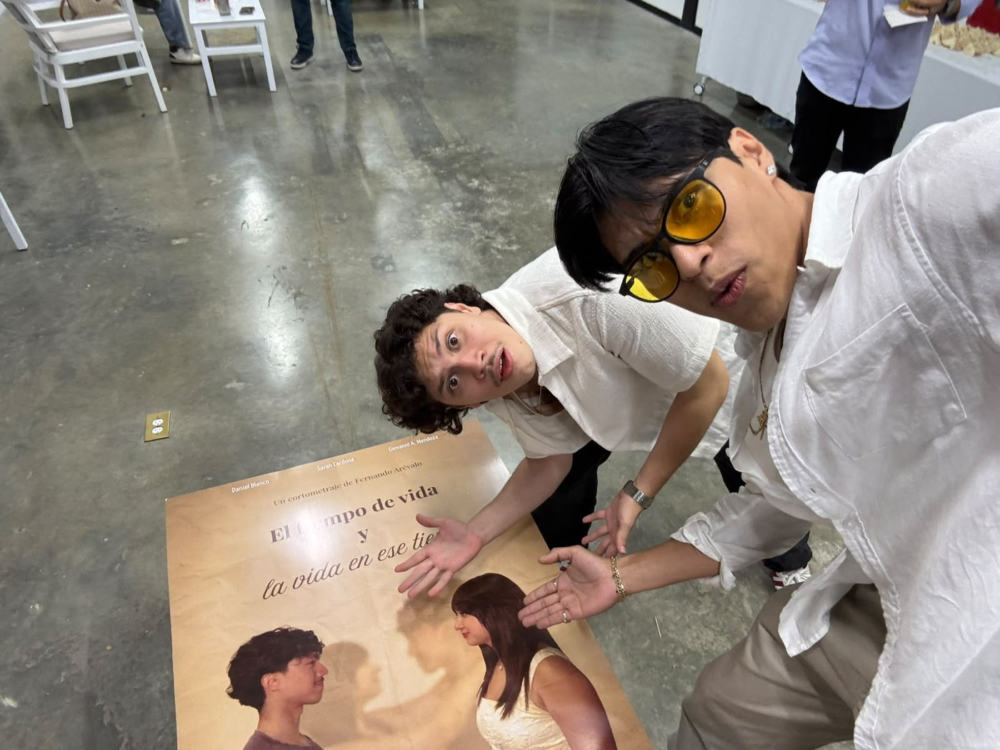
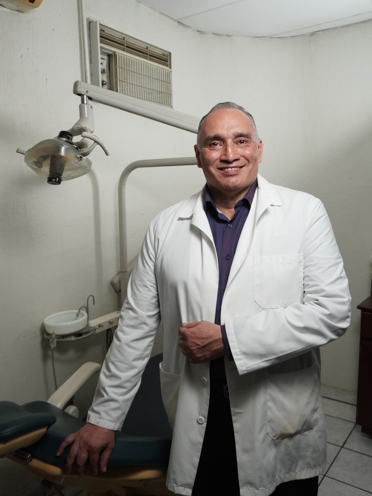
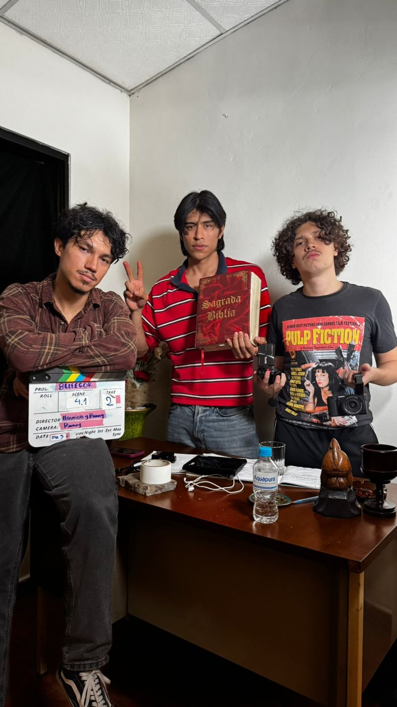
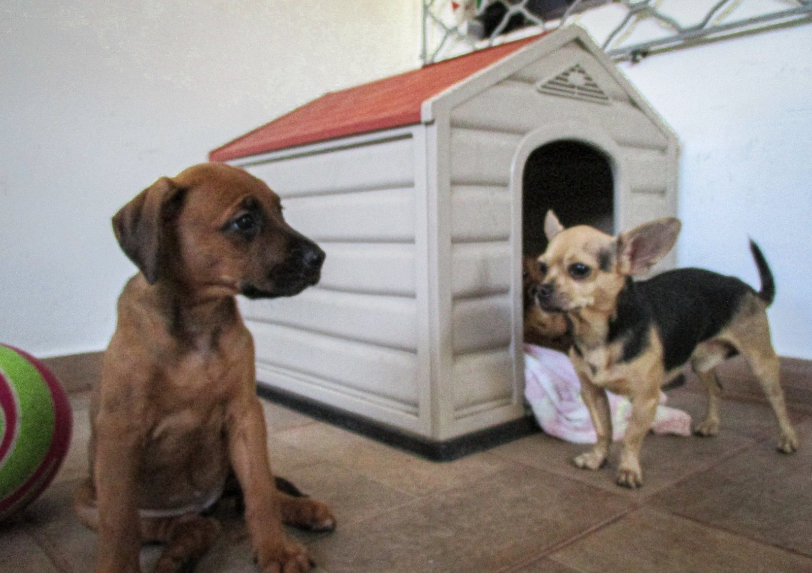
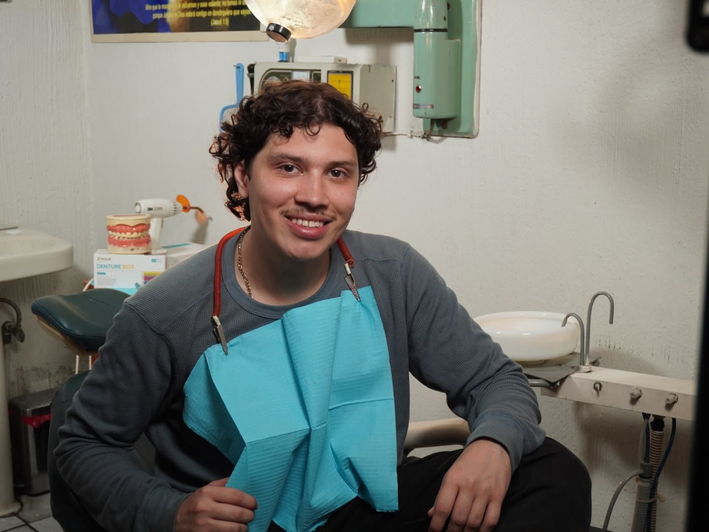

Sobre el estreno de «El tiempo de vida y la vida en ese tiempo»
Hace poco fuimos a una proyección de cortometrajes en la Don Bosco. Fueron cuatro cortos, uno detrás del otro, y el primero fue «El tiempo de vida y la vida en ese tiempo», de Fernando Arévalo, donde Mauri y yo actuamos.
Verte en una pantalla grande es raro. Te ponés nervioso, te reís de vos mismo, buscás en el público a alguien que también se esté riendo.
Después vinieron los demás, y cada uno nos movió algo distinto. Uno se metía en la historia de un asesinato y te dejaba con la cabeza dando vueltas. Otro hablaba de la memoria y de la familia con una sensibilidad que nos llegó. Y el último nos impresionó por su imagen: lo grabaron con una Sony FX6 y se notaba en cada plano.
Cuatro historias distintas, cuatro equipos distintos, y todos con lo mismo: ganas de contar algo.
Hacer cine acá a veces se siente solitario. Pasás días escribiendo, grabás con lo que hay, editás de madrugada, y en algún momento te preguntás si a alguien más le importa esto tanto como a vos.
Por eso ir a estos eventos se siente tan bonito. Te das cuenta de que no sos el único. Hay más gente soñando lo mismo, peleándola igual, creyendo que nuestras historias se pueden contar desde aquí. Y ahí estamos todos, apoyándonos de todo corazón, aplaudiendo de verdad el trabajo del otro.
Confieso que no soy mucho de socializar. Cuando terminaron los cortos, en vez de ir a platicar, me quedé viendo la vista. Desde ahí se veía toda la ciudad, y era espectacular. Soy bastante nostálgico, y esas vistas me entienden de una forma que a veces la gente no. La vista sí me entiende.
Me quedé un buen rato ahí, pensando en todo lo que acabábamos de ver. Y aunque yo estuviera callado mirando las luces, sabía que en esa sala había gente que sentía por el cine lo mismo que yo.
El cine salvadoreño no es algo que va a pasar algún día. Ya está pasando, y lo estamos haciendo entre todos, corto por corto, función por función.
Gracias a Fernando y a todo el equipo por dejarnos ser parte. Ojalá pronto «El tiempo de vida y la vida en ese tiempo» llegue a más festivales y más gente lo pueda ver. Nos vemos en la próxima función.






HAGAMOS REALIDAD TUS HISTORIAS
Email: orbecfilms@gmail.com Teléfono: +503 7103 6941